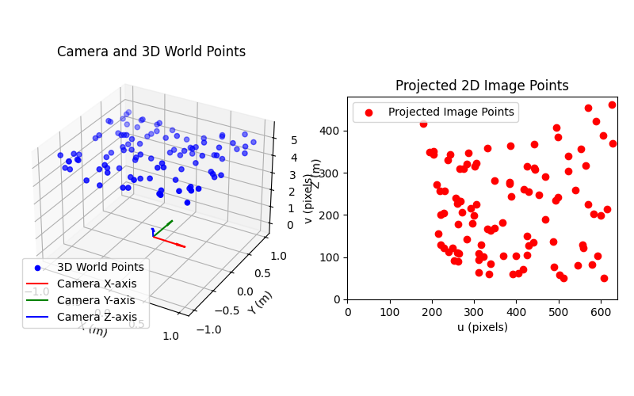

Note
Go to the end to download the full example code.
Projecting 3D points to 2D image points with project_points#
This example illustrate how to use the project_points function to project 3D world_points to
2D image_points using a specified camera model, which includes the intrinsic, extrinsic and distortion transformations.
See also
pycvcam.project_points()for the function to project 3D points to 2D image points.pycvcam.core.Intrinsicfor the intrinsic transformation.pycvcam.core.Extrinsicfor the extrinsic transformationpycvcam.core.Distortionfor the distortion transformation.
Simple Worflow#
Once the Extrinsic, Intrinsic and Distortion transformations are defined,
the 3D points can be projected to 2D image points using the project_points
function. The function returns a data class containing the projected
image points and optionally the Jacobians w.r.t. the input parameters.
For example, create a point cloud in a rectangle with bounds \([-1, 1]\) meters in the \(x\) and \(y\) directions and with a \(z\) component in the range \([4.5, 5.5]\) meters. Then place a camera near the origin with a small rotation and translation and project the 3D points to 2D image points using a pinhole camera model with Brown-Conrady distortion with a focal length of 1000 pixels and a principal point at (320, 240) pixels.
import numpy
from pycvcam import project_points, Cv2Distortion, Cv2Extrinsic, Cv2Intrinsic
import matplotlib.pyplot as plt
# Define the 3D points in the world coordinate system
x = numpy.random.uniform(-1.0, 1.0, (100, 1)) # shape (100, 1)
y = numpy.random.uniform(-1.0, 1.0, (100, 1)) # shape (100, 1)
z = numpy.random.uniform(4.5, 5.5, (100, 1)) # shape (100, 1)
world_points = numpy.hstack((x, y, z)) # shape (100, 3)
# Define the Extrinsic transformation, example rotation vector and translation vector
rvec = numpy.array([0.01, 0.02, 0.03]) # small rotation
tvec = numpy.array([0.1, -0.1, 0.2]) # small translation
extrinsic = Cv2Extrinsic.from_rt(rvec, tvec)
# Define the Intrinsic transformation, example intrinsic camera matrix
K = numpy.array([[1000.0, 0.0, 320.0], [0.0, 1000.0, 240.0], [0.0, 0.0, 1.0]])
intrinsic = Cv2Intrinsic.from_matrix(K)
# Define the Distortion transformation, example Brown-Conrady 5 parameters
distortion = Cv2Distortion(parameters=[0.1, 0.2, 0.3, 0.4, 0.5])
# Project the 3D points to 2D image points (without Jacobians)
result = project_points(
world_points,
intrinsic=intrinsic,
distortion=distortion,
extrinsic=extrinsic,
) # pycvcam.TransformResult data class
image_points = result.image_points # shape (100, 2)
print(f"Projected image points shape: {image_points.shape}")
Projected image points shape: (100, 2)
The project_points function can also compute the Jacobians w.r.t. the input parameters or w.r.t. the 3D world points by setting the corresponding flags to True.
The Jacobians are returned in the result data class.
# Project the 3D points to 2D image points with Jacobians
# Exemple w.r.t. distortion parameters and 3D world points
result = project_points(
world_points,
intrinsic=intrinsic,
distortion=distortion,
extrinsic=extrinsic,
dp=False, # Jacobian w.r.t. All parameters
dintrinsic=False, # Jacobian w.r.t. Intrinsic parameters only
dextrinsic=False, # Jacobian w.r.t. Extrinsic parameters only
ddistortion=True, # Jacobian w.r.t. Distortion parameters only
dx=True, # Jacobian w.r.t. 3D world points
) # pycvcam.TransformResult data class
image_points = result.image_points # shape (100, 2)
jacobian_dx = result.jacobian_dx # shape (100, 2, 3)
jacobian_ddistortion = result.jacobian_ddistortion # shape (100, 2, 5)
print(f"Projected image points shape: {image_points.shape}")
print(f"Jacobian w.r.t. 3D world points shape: {jacobian_dx.shape}")
print(f"Jacobian w.r.t. Distortion parameters shape: {jacobian_ddistortion.shape}")
Projected image points shape: (100, 2)
Jacobian w.r.t. 3D world points shape: (100, 2, 3)
Jacobian w.r.t. Distortion parameters shape: (100, 2, 5)
Visualize the camera and the 3D points in the world coordinate system
fig = plt.figure(figsize=(8, 5))
ax_3d = fig.add_subplot(121, projection="3d")
ax_3d.scatter(
world_points[:, 0],
world_points[:, 1],
world_points[:, 2],
c="b",
label="3D World Points",
)
camera_frame = extrinsic.frame
x_axis = camera_frame.x_axis
y_axis = camera_frame.y_axis
z_axis = camera_frame.z_axis
origin = camera_frame.origin
ax_3d.quiver(*origin, *x_axis, length=0.5, color="r", label="Camera X-axis")
ax_3d.quiver(*origin, *y_axis, length=0.5, color="g", label="Camera Y-axis")
ax_3d.quiver(*origin, *z_axis, length=0.5, color="b", label="Camera Z-axis")
ax_3d.set_xlabel("X (m)")
ax_3d.set_ylabel("Y (m)")
ax_3d.set_zlabel("Z (m)")
ax_3d.set_title("Camera and 3D World Points")
ax_3d.legend()
ax_image = fig.add_subplot(122)
ax_image.scatter(
image_points[:, 0], image_points[:, 1], c="r", label="Projected Image Points"
)
ax_image.set_xlim(0, 640)
ax_image.set_ylim(0, 480)
ax_image.set_aspect("equal")
ax_image.set_xlabel("u (pixels)")
ax_image.set_ylabel("v (pixels)")
ax_image.set_title("Projected 2D Image Points")
ax_image.legend()
plt.tight_layout(pad=1.5)
plt.show()

Set Extrinsic, Intrinsic and Distortion transformations to None to change the behavior#
If the used camera model does not have distortion, the Distortion transformation can be set to None
and the distortion will be treated as a pycvcam.NoDistortion with zero parameters.
The same applies to the Extrinsic and Intrinsic transformations, which will be treated as
pycvcam.NoExtrinsic and pycvcam.NoIntrinsic respectively if set to None.
result = project_points(
world_points,
intrinsic=intrinsic,
distortion=None, # No distortion
extrinsic=extrinsic,
) # pycvcam.TransformResult data class
image_points = result.image_points # shape (100, 2)
print(f"Projected image points shape: {image_points.shape}")
Projected image points shape: (100, 2)
This behavior can be used to easily change the behavior of the projection by simply setting the corresponding transformation to None without needing to define a specific No* transformation.
For examplee, the function can be transformed into a simple distort function by setting the Extrinsic and Intrinsic transformations to None and only using the Distortion transformation.
In this case, add a random \(z\) component to the normalized 2D points to make them 3D points before applying the distortion.
# Define the 2D normalized points (z=1.0)
normalized_points = numpy.random.uniform(-0.5, 0.5, (100, 2)) # shape (100, 2)
normalized_points = numpy.hstack(
(normalized_points, numpy.ones((100, 1)))
) # shape (100, 3)
result = project_points(
normalized_points,
intrinsic=None, # No intrinsic transformation
distortion=distortion, # Only distortion
extrinsic=None, # No extrinsic transformation
) # pycvcam.TransformResult data class
distorted_points = result.image_points # shape (100, 2)
print(f"Distorted points shape: {distorted_points.shape}")
Distorted points shape: (100, 2)
Total running time of the script: (0 minutes 0.128 seconds)